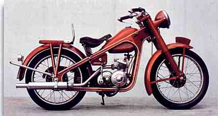

Historia da Honda
Em 17 de novembro de 1906, nascia na aldeia de Komyo, na cidade de Hamamatsu, no Japão, o filho mais velho de um ferreiro. Seu nome, Soichiro Honda. Era uma criança curiosa, que desde muito cedo ficava observando os motores, encantado com seus barulhos, cheiros e segredos! Nunca foi um bom aluno,mas nem por isso não era inteligente, pois apesar de não se interessar pelas teorias dos livros, ele preferia a prática das coisas!
Aos 8 anos, já havia construído uma bicicleta e, aos 13 já tinha uma série de pequenas "invenções"! Aos 16 anos, Honda foi para Tóquio como aprendiz numa oficina mecânica e poucos anos mais tarde, voltou para Hamamatsu e abriu a sua própria oficina.
Aos 25 anos, sua oficina já havia crescido e se tornado muito lucrativa! Honda pôde começar a sua vida excêntrica ! Construiu um barco de corrida, e um carro muito potente, com motor de avião American Curtiss Wright !
Já com 30 anos, decidiu fabricar peças ao invés de consertá-las e começou a fabricar anéis para pistões. Mas fabricar não era tão fácil como pensava e, apesar da estrutura (50 funcionários e sede própria), Honda passou por um período muito difícil. Seus recursos quase acabaram !
Depois de muita pesquisa, Honda descobriu (com a ajuda de um antigo professor) o que faltava na liga dos anéis: o silício!
Finalmente, em final de 1937, a "Tokai Seiki Heavy Industries" começou a fabricar anéis de qualidade e se tornou novamente (muito) rentável!
Honda decidiu estudar mais os metais e entrou no Instituto de Tecnologia de Hamamatsu. Como nunca foi estudioso, só assistia às aulas que lhe interessava. Quando o reitor foi explicar que não poderia receber o diploma, Honda lhe disse: "Diploma? Isso vale menos que um ingresso de cinema. O ingresso lhe garante a entrada no cinema pois voce pagou e o diploma não garante que se possa ganhar a vida com ele..." (em suas empresas, as pessoas sempre foram promovidas pelo trabalho e competência, independente do grau de instrução )
A rendição do Japão se deu quando Honda lutava para reconstruir suas máquinas e instalações! Com futuro incerto, Honda vendeu sua fábrica para a Toyota, que era cliente de seus anéis.
Um pouco desiludido, Honda ficou um tempo fora do circuito, gastando parte do dinheiro da venda na "vida boa" !
Ambicioso e predestinado, em outubro de 1946, criou o Instituto de Pesquisas Técnicas Honda, no centro de Hammamatsu.
O Japão pós guerra estava caótico e um dos piores problemas era o transporte. Com o racionamento de combustível e trens lotados, Honda pensou pela primeira vez nas motocicletas! Comprou então um lote de motores usados para geradores. Com sua capacidade criativa, os adaptou em bicicletas e logo estava vendendo os primeiros ciclomotores !
O primeiro lote de 500 motores arrematados foram vendidos rapidamente e Honda começou a projetar seu próprio motor. Era um motor de 50 cc com potência de 0,5 cavalo. O sucesso de vendas foi tanto, que em setembro de 1948, foi fundada a Honda Motor Company !
O primeiro ciclomotor Honda era de 90cc, chamado de A. Este ciclomotor era conhecido como "Chaminé" pois a mistura combustível era rica em terebentina devido ao racionamento de gasolina e fazia muita fumaça !
Mas Honda queria algo mais e após vários protótipos, em 1949 nasceu a primeira motocicleta Honda, com 98 cc e 3 cavalos, que seria chamada muito apropriadamente de "Dream" (sonho)!
A partir daí, a história de Soichiro se confunde com a própria história da Honda ! Sua competência e genialidade, sempre a frente dos negócios e sempre dinâmico, fizeram da Honda a maior industria motociclistica do mundo!
Soichiro e seu inseparável amigo e sócio Fujisawa
Soichiro parecia que nunca estava satisfeito e sempre incentivou as pesquisas, o que levou a Honda a participar de competições de motos e carros, invariavelmente com incrível sucesso !
Empreendedor, fabricou carros, motos, geradores , motores de popa, máquinas agrícolas e muitos outros produtos, mas sempre sob sua batuta !
Soichiro Honda não só fundou a maior empresa de motocicletas, mas principalmente popularizou o motociclismo e introduziu um alto nível de tecnologia e confiabilidade em veículos de duas rodas !
Infelizmente, nada é eterno! Em 5 de agosto de 1991, Soichiro não resistiu aos sérios problemas hepáticos e deixou, aos 84 anos, o mundo do motociclismo órfão !
Foi uma vida inteira dedicada a projetos audaciosos!
Em final de 1999, Soichiro foi eleito por jornalistas do mundo inteiro, o "Motociclista do Século", aliás , um título prá lá de justo !!
Assim nasceu a Honda Motor Company, um dos maiores impérios da indústria automobilística japonesa, conhecida e respeitada no mundo inteiro.